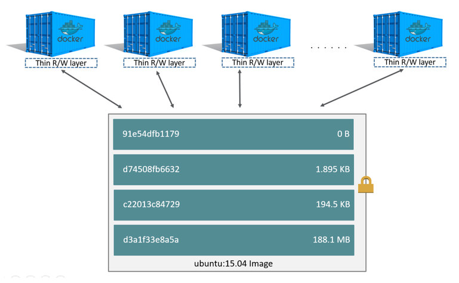
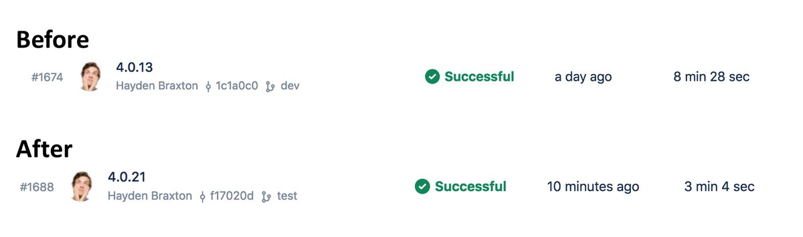

Dockerize your JavaScript Dev Environment

Hayden Braxton
@hayden_dev
Before we get started
Install Docker!! docker.com/community-edition
Legacy Support docs.docker.com/toolbox/overview
Windows users, please switch to Linux containers

Intro to Docker
What is Docker, really?
Docker is a virtualization technology that allows you to create isolated, minimalistic environments that contain only the absolute necessary dependencies needed for a specific purpose.
What is Docker?
What is a container?
- Virtual OS
- Containers share their host kernel

Image Layers

Dockerize your Dev Environment

The Problem
Dependencies are hard


Let's build the image
Does it work?
Bonus

CI Builds

I need a volunteer
What's next?


Container Orchestration

Questions?
THANKS!